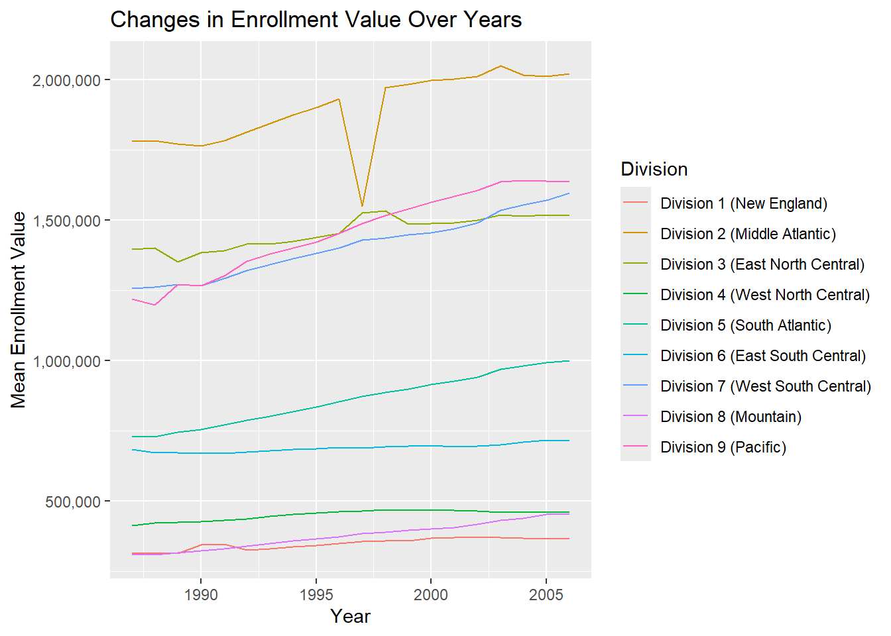
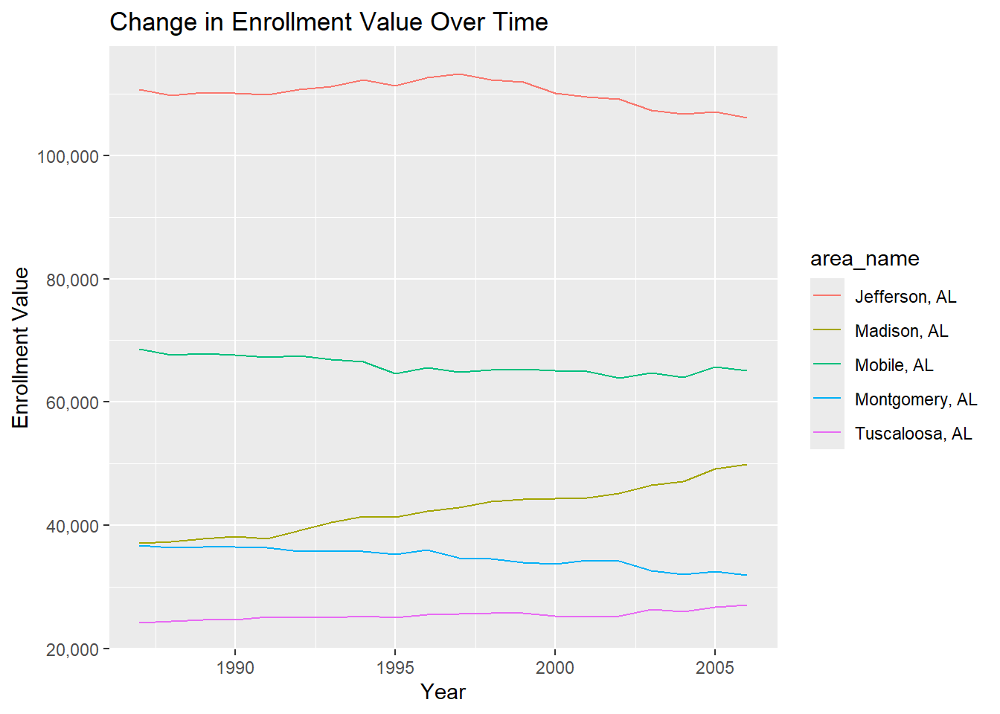
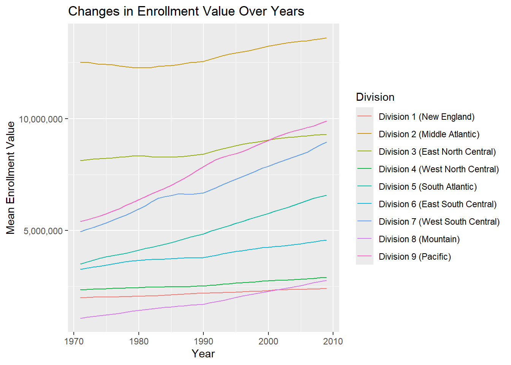
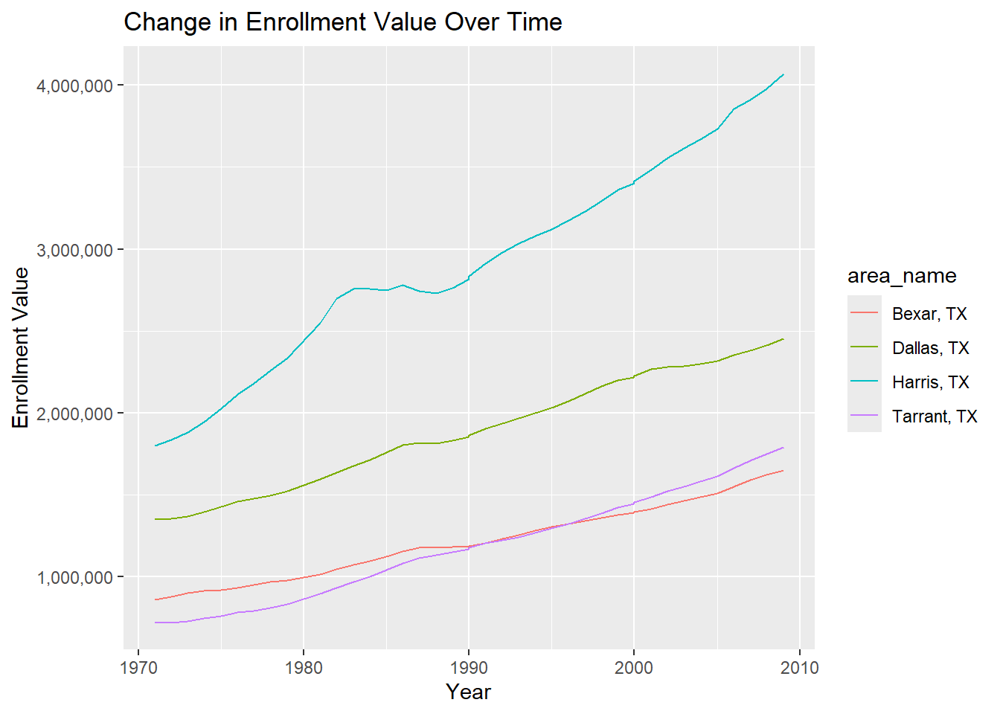

In this project we will write functions to manipulate data sets that are given to us in a certain form. The final goal is to generate plots that display how enrollment in certain counties varies throughout different years.
Author
Luke Freudenheim and Natalie Root
Published
June 18, 2024
Data Processing
We will first load necessary packages and read in the data from the URL.
# Load packageslibrary(tidyverse)
── Attaching core tidyverse packages ──────────────────────── tidyverse 2.0.0 ──
✔ dplyr 1.1.4 ✔ readr 2.1.5
✔ forcats 1.0.0 ✔ stringr 1.5.1
✔ ggplot2 3.5.1 ✔ tibble 3.2.1
✔ lubridate 1.9.3 ✔ tidyr 1.3.0
✔ purrr 1.0.2
── Conflicts ────────────────────────────────────────── tidyverse_conflicts() ──
✖ dplyr::filter() masks stats::filter()
✖ dplyr::lag() masks stats::lag()
ℹ Use the conflicted package (<http://conflicted.r-lib.org/>) to force all conflicts to become errors
library(readxl)library(DBI)
Warning: package 'DBI' was built under R version 4.3.3
library(scales)
Attaching package: 'scales'
The following object is masked from 'package:purrr':
discard
The following object is masked from 'package:readr':
col_factor
# Read in the datadata1 <-read_csv("https://www4.stat.ncsu.edu/~online/datasets/EDU01a.csv")
Rows: 3198 Columns: 42
── Column specification ────────────────────────────────────────────────────────
Delimiter: ","
chr (22): Area_name, STCOU, EDU010187N1, EDU010187N2, EDU010188N1, EDU010188...
dbl (20): EDU010187F, EDU010187D, EDU010188F, EDU010188D, EDU010189F, EDU010...
ℹ Use `spec()` to retrieve the full column specification for this data.
ℹ Specify the column types or set `show_col_types = FALSE` to quiet this message.
1. Only select the columns identified in the instructional document
We will select the area name, STCOU, and other columns that end with a “D”. we will also rename the Area_name variable.
# Name the tibbleselected_data1 <- data1 |># Select the respective columnsselect(Area_name, STCOU, ends_with("D")) |># Rename the Area_name variablerename(area_name = Area_name)selected_data1
# A tibble: 3,198 × 12
area_name STCOU EDU010187D EDU010188D EDU010189D EDU010190D EDU010191D
<chr> <chr> <dbl> <dbl> <dbl> <dbl> <dbl>
1 UNITED STATES 00000 40024299 39967624 40317775 40737600 41385442
2 ALABAMA 01000 733735 728234 730048 728252 725541
3 Autauga, AL 01001 6829 6900 6920 6847 7008
4 Baldwin, AL 01003 16417 16465 16799 17054 17479
5 Barbour, AL 01005 5071 5098 5068 5156 5173
6 Bibb, AL 01007 3557 3508 3571 3621 3652
7 Blount, AL 01009 7319 7223 7205 7209 7155
8 Bullock, AL 01011 2014 1980 1985 1983 1985
9 Butler, AL 01013 4640 4582 4610 4591 4544
10 Calhoun, AL 01015 20939 20923 20907 20849 20768
# ℹ 3,188 more rows
# ℹ 5 more variables: EDU010192D <dbl>, EDU010193D <dbl>, EDU010194D <dbl>,
# EDU010195D <dbl>, EDU010196D <dbl>
2. Convert the data into long format
We will now convert our dataset into a long format instead of the wide format.
# A tibble: 31,980 × 4
area_name STCOU Survey `Enrollment Value`
<chr> <chr> <chr> <dbl>
1 UNITED STATES 00000 EDU010187D 40024299
2 UNITED STATES 00000 EDU010188D 39967624
3 UNITED STATES 00000 EDU010189D 40317775
4 UNITED STATES 00000 EDU010190D 40737600
5 UNITED STATES 00000 EDU010191D 41385442
6 UNITED STATES 00000 EDU010192D 42088151
7 UNITED STATES 00000 EDU010193D 42724710
8 UNITED STATES 00000 EDU010194D 43369917
9 UNITED STATES 00000 EDU010195D 43993459
10 UNITED STATES 00000 EDU010196D 44715737
# ℹ 31,970 more rows
3. Survey values
Next, we will extract the measurement and year from the survey variable and add these as columns to our dataset.
long_data1_updated <- long_data1 |># Extract the year from the 'Survey' column, covert to a number, and create a new 'Year' variable with these valuesmutate(Year =as.numeric(substr(Survey, start =8, stop =9))) |># Convert the two digit year into a four digit year and overwrite the 'Year' columnmutate(Year =ifelse(Year >24, Year +1900, Year +2000)) |># Extract the first 7 digits from the 'Survey' column and create a new 'Measurement' variable with these valuesmutate(Measurement =substr(Survey, start =1, stop =7))long_data1_updated
# A tibble: 31,980 × 6
area_name STCOU Survey `Enrollment Value` Year Measurement
<chr> <chr> <chr> <dbl> <dbl> <chr>
1 UNITED STATES 00000 EDU010187D 40024299 1987 EDU0101
2 UNITED STATES 00000 EDU010188D 39967624 1988 EDU0101
3 UNITED STATES 00000 EDU010189D 40317775 1989 EDU0101
4 UNITED STATES 00000 EDU010190D 40737600 1990 EDU0101
5 UNITED STATES 00000 EDU010191D 41385442 1991 EDU0101
6 UNITED STATES 00000 EDU010192D 42088151 1992 EDU0101
7 UNITED STATES 00000 EDU010193D 42724710 1993 EDU0101
8 UNITED STATES 00000 EDU010194D 43369917 1994 EDU0101
9 UNITED STATES 00000 EDU010195D 43993459 1995 EDU0101
10 UNITED STATES 00000 EDU010196D 44715737 1996 EDU0101
# ℹ 31,970 more rows
4. Create two data sets
We will now create two datasets. One will have state data and the other will have county data in it.
Data set that contains only non-county data
# Identify the indices corresponding to statescounty_indices <-grep(pattern =", \\w\\w", long_data1_updated$area_name)# Create the county data set with only non-county level datanoncounty_tibble <- long_data1_updated[-county_indices, ]# Add a class to the tibble called 'state'class(noncounty_tibble) <-c("state", class(noncounty_tibble))
Data set that contains only county level data
# Create the county data set with only county level datacounty_tibble <- long_data1_updated[county_indices, ]# Add a class to the tibble called 'county'class(county_tibble) <-c("county", class(county_tibble))
5. Create a new variable to describe the corresponding state in the county tibble
Here, we will create a State variable in the county dataset using the area_name variable we have.
# A tibble: 31,450 × 7
area_name STCOU Survey `Enrollment Value` Year Measurement State
<chr> <chr> <chr> <dbl> <dbl> <chr> <chr>
1 Autauga, AL 01001 EDU010187D 6829 1987 EDU0101 AL
2 Autauga, AL 01001 EDU010188D 6900 1988 EDU0101 AL
3 Autauga, AL 01001 EDU010189D 6920 1989 EDU0101 AL
4 Autauga, AL 01001 EDU010190D 6847 1990 EDU0101 AL
5 Autauga, AL 01001 EDU010191D 7008 1991 EDU0101 AL
6 Autauga, AL 01001 EDU010192D 7137 1992 EDU0101 AL
7 Autauga, AL 01001 EDU010193D 7152 1993 EDU0101 AL
8 Autauga, AL 01001 EDU010194D 7381 1994 EDU0101 AL
9 Autauga, AL 01001 EDU010195D 7568 1995 EDU0101 AL
10 Autauga, AL 01001 EDU010196D 7834 1996 EDU0101 AL
# ℹ 31,440 more rows
6. Create a new ‘division’ variable for the non-county tibble
We will now create a variable corresponding to the division of each state within the state tibble. There are 9 different divisions.
noncounty_tibble |># Filtering out the duplicated entryfilter(area_name !="District of Columbia") |>mutate(Division =ifelse(area_name %in%c("CONNECTICUT", "MAINE", "MASSACHUSETTS", "NEW HAMPSHIRE", "RHODE ISLAND", "VERMONT"), "Division 1 (New England)",ifelse(area_name %in%c("NEW JERSEY", "NEW YORK", "PENNSYLVANIA"), "Division 2 (Middle Atlantic)",ifelse(area_name %in%c("ILLINOIS", "INDIANA", "MICHIGAN", "OHIO", "WISCONSIN"), "Division 3 (East North Central)",ifelse(area_name %in%c("IOWA", "KANSAS", "MINNESOTA", "MISSOURI", "NEBRASKA", "NORTH DAKOTA", "SOUTH DAKOTA"), "Division 4 (West North Central)",ifelse(area_name %in%c("DELAWARE", "FLORIDA", "GEORGIA", "MARYLAND", "NORTH CAROLINA", "SOUTH CAROLINA", "VIRGINIA", "DISTRICT OF COLUMBIA", "District of Columbia", "WEST VIRGINIA"), "Division 5 (South Atlantic)",ifelse(area_name %in%c("ALABAMA", "KENTUCKY", "MISSISSIPPI", "TENNESSEE"), "Division 6 (East South Central)",ifelse(area_name %in%c("ARKANSAS", "LOUISIANA", "OKLAHOMA", "TEXAS"), "Division 7 (West South Central)",ifelse(area_name %in%c("ARIZONA", "COLORADO", "IDAHO", "MONTANA", "NEVADA", "NEW MEXICO", "UTAH", "WYOMING"), "Division 8 (Mountain)",ifelse(area_name %in%c("ALASKA", "CALIFORNIA", "HAWAII", "OREGON", "WASHINGTON"), "Division 9 (Pacific)", "ERROR"))))))))))
# A tibble: 520 × 7
area_name STCOU Survey `Enrollment Value` Year Measurement Division
<chr> <chr> <chr> <dbl> <dbl> <chr> <chr>
1 UNITED STATES 00000 EDU010187D 40024299 1987 EDU0101 ERROR
2 UNITED STATES 00000 EDU010188D 39967624 1988 EDU0101 ERROR
3 UNITED STATES 00000 EDU010189D 40317775 1989 EDU0101 ERROR
4 UNITED STATES 00000 EDU010190D 40737600 1990 EDU0101 ERROR
5 UNITED STATES 00000 EDU010191D 41385442 1991 EDU0101 ERROR
6 UNITED STATES 00000 EDU010192D 42088151 1992 EDU0101 ERROR
7 UNITED STATES 00000 EDU010193D 42724710 1993 EDU0101 ERROR
8 UNITED STATES 00000 EDU010194D 43369917 1994 EDU0101 ERROR
9 UNITED STATES 00000 EDU010195D 43993459 1995 EDU0101 ERROR
10 UNITED STATES 00000 EDU010196D 44715737 1996 EDU0101 ERROR
# ℹ 510 more rows
Function Creation
In this section we will create functions to automate parts of what we did in the data processing steps.
Function to select necessary columns and convert the data into long format (Steps 1 and 2)
This function does steps 1 and 2 from the processing data section of this report. It selects necessary columns and makes the data into a long format.
long_format_conversion <-function(df, value ="Enrollment Value") { selected_data <- df |># Select the respective columnsselect(Area_name, STCOU, ends_with("D")) |># Rename the Area_name variablerename(area_name = Area_name)# Convert the data into long format long_data <-pivot_longer(selected_data, cols =ends_with("D"), names_to ="Survey", values_to = value)return(long_data)}
Function for pulling out year and measurement from the survey values (Step 3)
This function does step 3 of the data processing section by adding the year and measurement variables to the dataset.
survey_function <-function(long_data) { long_data_updated <- long_data |># Extract the year from the 'Survey' column, covert to a number, and create a new 'Year' variable with these valuesmutate(Year =as.numeric(substr(Survey, start =8, stop =9))) |># Covert the two digit year into a four digit year and overwrite the 'Year' columnmutate(Year =ifelse(Year >25, Year +1900, Year +2000)) |># Extract the first 7 digits from the 'Survey' column and create a new 'Measurement' variable with these valuesmutate(Measurement =substr(Survey, start =1, stop =7))return(long_data_updated)}
Function for creating a state variable (Step 5)
This function does step 5 from the previous section by adding the state variable to the county tibble. It will be used within a later function where we will split datasets into county and state data.
Function for creating the division variable of the state tibble (Step 6)
This function creates the division variable within the state tibble. It will also be used in the next function we create.
division_function <-function(noncounty_tibble) { noncounty_tibble_updated <- noncounty_tibble |>filter(area_name !="District of Columbia") |>mutate(Division =ifelse(area_name %in%c("CONNECTICUT", "MAINE", "MASSACHUSETTS", "NEW HAMPSHIRE", "RHODE ISLAND", "VERMONT"), "Division 1 (New England)",ifelse(area_name %in%c("NEW JERSEY", "NEW YORK", "PENNSYLVANIA"), "Division 2 (Middle Atlantic)",ifelse(area_name %in%c("ILLINOIS", "INDIANA", "MICHIGAN", "OHIO", "WISCONSIN"), "Division 3 (East North Central)",ifelse(area_name %in%c("IOWA", "KANSAS", "MINNESOTA", "MISSOURI", "NEBRASKA", "NORTH DAKOTA", "SOUTH DAKOTA"), "Division 4 (West North Central)",ifelse(area_name %in%c("DELAWARE", "FLORIDA", "GEORGIA", "MARYLAND", "NORTH CAROLINA", "SOUTH CAROLINA", "VIRGINIA", "DISTRICT OF COLUMBIA", "District of Columbia", "WEST VIRGINIA"), "Division 5 (South Atlantic)",ifelse(area_name %in%c("ALABAMA", "KENTUCKY", "MISSISSIPPI", "TENNESSEE"), "Division 6 (East South Central)",ifelse(area_name %in%c("ARKANSAS", "LOUISIANA", "OKLAHOMA", "TEXAS"), "Division 7 (West South Central)",ifelse(area_name %in%c("ARIZONA", "COLORADO", "IDAHO", "MONTANA", "NEVADA", "NEW MEXICO", "UTAH", "WYOMING"), "Division 8 (Mountain)",ifelse(area_name %in%c("ALASKA", "CALIFORNIA", "HAWAII", "OREGON", "WASHINGTON"), "Division 9 (Pacific)", "ERROR"))))))))))return(noncounty_tibble_updated)}
Function for creating two datasets from one and adding division/state variables (Steps 4-6)
This function does step 4-6 of the data processing phase. It splits the main dataset into a state tibble and a county tibble. Next, it calls both of the previous functions written within each respective dataset to add the necessary variables.
This wrapper function takes all of the functions we made previously and combines them into one. It will allow us to perform all of the functions simultaneously given the URL to a dataset.
Rows: 3198 Columns: 42
── Column specification ────────────────────────────────────────────────────────
Delimiter: ","
chr (22): Area_name, STCOU, EDU010187N1, EDU010187N2, EDU010188N1, EDU010188...
dbl (20): EDU010187F, EDU010187D, EDU010188F, EDU010188D, EDU010189F, EDU010...
ℹ Use `spec()` to retrieve the full column specification for this data.
ℹ Specify the column types or set `show_col_types = FALSE` to quiet this message.
Rows: 3198 Columns: 42
── Column specification ────────────────────────────────────────────────────────
Delimiter: ","
chr (22): Area_name, STCOU, EDU010197N1, EDU010197N2, EDU010198N1, EDU010198...
dbl (20): EDU010197F, EDU010197D, EDU010198F, EDU010198D, EDU010199F, EDU010...
ℹ Use `spec()` to retrieve the full column specification for this data.
ℹ Specify the column types or set `show_col_types = FALSE` to quiet this message.
Write a function to combine data sets
This function will combine two different county datasets with each other and combine different state datasets with each other. It will return a list with two items: the combined state data frame and the combined county data frame.
Here we will combine the two tibbles generated from the wrapper functions.
df <-combine_tibbles(tibble1, tibble2)
Write the plot state function
This function will create a new plot for the state data frame that will group by the division, create a mean for whatever value is given, and then plot the year vs. value what is given.
plot.state <-function(df, value ="Enrollment Value") { updated_df <- df |>filter(Division !="ERROR") |>group_by(Division, Year) |>summarize(mean_stat =mean(get(value))) g <-ggplot(updated_df, aes(x = Year, y = mean_stat, color = Division)) g +geom_line() +labs(y =paste("Mean", value)) +ggtitle(paste("Changes in", value, "Over Years")) +scale_y_continuous(labels =label_comma())}
Write the plot county function
This function will create a new plot for the county dataset and is very flexible. You can input different states, number of observations, and order of sorting. The final plot will look at the change in whatever value is specified over time.
plot.county <-function(df, state ="AL", order ="top", number =5, value ="Enrollment Value") { df_updated <- df |>filter(State == state) |>group_by(area_name) |>summarize(county_mean_stat =mean(get(value)))if(order =="top") { df_updated <- df_updated |>arrange(desc(county_mean_stat)) } elseif(order =="bottom") { df_updated <- df_updated |>arrange(county_mean_stat) } else {return("Invalid order value") } df_updated <- df_updated |>slice(1:number) df_plot <-left_join(df_updated, df, by ="area_name")ggplot(df_plot, aes(x = Year, y =get(value), color = area_name)) +geom_line() +labs(y =paste(value)) +ggtitle(paste("Change in", value, "Over Time")) +scale_y_continuous(labels =label_comma())}
Put It All Together
In this section, we will run our functions we made on different URL’s in order to take the raw data, put it in the correct format, and then display plots for different states, divisions, and number of observations.
Run the data processing function on the 2 enrollment URLs
Here we will process the data from the first 2 enrollment URL’s given.
# Run the function on enrollment URL 1enroll1 <-my_wrapper("https://www4.stat.ncsu.edu/~online/datasets/EDU01a.csv", value ="Enrollment Value")
Rows: 3198 Columns: 42
── Column specification ────────────────────────────────────────────────────────
Delimiter: ","
chr (22): Area_name, STCOU, EDU010187N1, EDU010187N2, EDU010188N1, EDU010188...
dbl (20): EDU010187F, EDU010187D, EDU010188F, EDU010188D, EDU010189F, EDU010...
ℹ Use `spec()` to retrieve the full column specification for this data.
ℹ Specify the column types or set `show_col_types = FALSE` to quiet this message.
# Run the function on enrollment URL 2enroll2 <-my_wrapper("https://www4.stat.ncsu.edu/~online/datasets/EDU01b.csv", value ="Enrollment Value")
Rows: 3198 Columns: 42
── Column specification ────────────────────────────────────────────────────────
Delimiter: ","
chr (22): Area_name, STCOU, EDU010197N1, EDU010197N2, EDU010198N1, EDU010198...
dbl (20): EDU010197F, EDU010197D, EDU010198F, EDU010198D, EDU010199F, EDU010...
ℹ Use `spec()` to retrieve the full column specification for this data.
ℹ Specify the column types or set `show_col_types = FALSE` to quiet this message.
Run the data combining function to make one object
This will combine the state data frame with the other state data frame, and the county data frame with the other county data frame.
enroll_combo <-combine_tibbles(enroll1, enroll2)
Use the plot function on the state data frame
Here we will plot the state data frame for the combined data using our plot.state function.
plot.state(enroll_combo[[2]])
`summarise()` has grouped output by 'Division'. You can override using the
`.groups` argument.

Use the plot function on the county data frame
We will now plot the county data and give it 4 different inputs to see the flexibility of our plot.county function that we created.
# Specify the state to "NC", the group to top, and the number to 20plot.county(enroll_combo[[1]], state ="NC", order ="top", number =20)
# Specify the state to "SC", the group to bottom, and the number to 7plot.county(enroll_combo[[1]], state ="SC", order ="bottom", number =7)
# Do not specify anythingplot.county(enroll_combo[[1]])

# Specify the state to "PA", the group to top, and the number to 8plot.county(enroll_combo[[1]], state ="PA", order ="top", number =8)
Read in similar data sets and apply the functions
Run the data processing function
In this step we will read in 4 more URL’s to obtain different datasets and we will test our wrapper function on these.
Rows: 3198 Columns: 42
── Column specification ────────────────────────────────────────────────────────
Delimiter: ","
chr (22): Area_name, STCOU, PST015171N1, PST015171N2, PST015172N1, PST015172...
dbl (20): PST015171F, PST015171D, PST015172F, PST015172D, PST015173F, PST015...
ℹ Use `spec()` to retrieve the full column specification for this data.
ℹ Specify the column types or set `show_col_types = FALSE` to quiet this message.
Rows: 3198 Columns: 42
── Column specification ────────────────────────────────────────────────────────
Delimiter: ","
chr (22): Area_name, STCOU, PST025182N1, PST025182N2, PST025183N1, PST025183...
dbl (20): PST025182F, PST025182D, PST025183F, PST025183D, PST025184F, PST025...
ℹ Use `spec()` to retrieve the full column specification for this data.
ℹ Specify the column types or set `show_col_types = FALSE` to quiet this message.
Rows: 3198 Columns: 42
── Column specification ────────────────────────────────────────────────────────
Delimiter: ","
chr (22): Area_name, STCOU, PST035191N1, PST035191N2, PST035192N1, PST035192...
dbl (20): PST035191F, PST035191D, PST035192F, PST035192D, PST035193F, PST035...
ℹ Use `spec()` to retrieve the full column specification for this data.
ℹ Specify the column types or set `show_col_types = FALSE` to quiet this message.
Rows: 3198 Columns: 42
── Column specification ────────────────────────────────────────────────────────
Delimiter: ","
chr (22): Area_name, STCOU, PST045200N1, PST045200N2, PST045201N1, PST045201...
dbl (20): PST045200F, PST045200D, PST045201F, PST045201D, PST045202F, PST045...
ℹ Use `spec()` to retrieve the full column specification for this data.
ℹ Specify the column types or set `show_col_types = FALSE` to quiet this message.
Run the data combining function to put these data sets into one object
We now will combine the data of 4 URL’s that we read in and put it into one larger object. We will use the combine_tibbles function for this.
# Combine URLs 1 and 2combo1 <-combine_tibbles(url1, url2)# Combine URLs 3 and 4combo2 <-combine_tibbles(url3, url4)# Combine all 4 URLsurl_combo <-combine_tibbles(combo1, combo2)
Use the plot function on the state data frame
We will now test out the plot.state function on the new state data frame of the combined data.
plot.state(url_combo[[2]])
`summarise()` has grouped output by 'Division'. You can override using the
`.groups` argument.

Use the plot function on the county data frame
We will now test the plot.county function with different inputs on our combined county data frame.
# Specify the state to "CA", the group to top, and the number to 15plot.county(url_combo[[1]], state ="CA", order ="top", number =15)
# Specify the state to "TX", the group to top, and the number to 4plot.county(url_combo[[1]], state ="TX", order ="top", number =4)

# Do not specify anythingplot.county(url_combo[[1]])
# Specify the state to "NY", the group to top, and the number to 10plot.county(url_combo[[1]], state ="NY", order ="top", number =10)